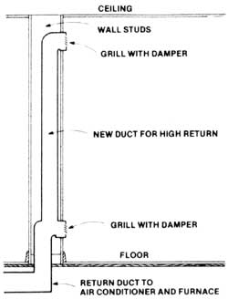

Continuous ridge vents can lower attic temperatures by as much as 15 degrees. Total open area of ridge vents should be matched by an equal area of soffit vents . . . which, together, should equal at least 1/300 the area of your attic floor in the northern U.S., or 1/150 your attic floor area in the South.